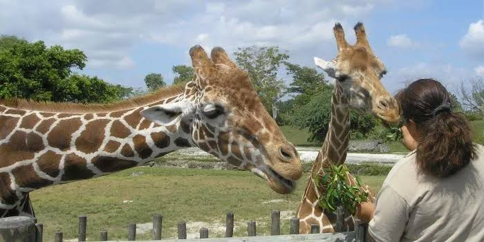

- La jirafa (Giraffa camelopardalis) es una especie de mamífero artiodáctilo, de la familia Giraffidae propio de África. Es la más alta de todas las especies de animales terrestres existentes, ya que puede alcanzar una altura máxima de 5,7 m y un peso que varía entre 750 y 1600 kg. Están adaptadas de forma única para alcanzar una vegetación inaccesible para otros herbívoros. Sus vasos sanguíneos inusualmente elásticos y las válvulas especialmente adaptadas ayudan a compensar la acumulación repentina de sangre (para evitar desmayos) cuando las cabezas de las jirafas se levantan, bajan o se balancean rápidamente. Su área de distribución es dispersa y se extiende desde Chad en África Central, hasta Sudáfrica en el sur, y desde Níger en el oeste hasta Somalia en el este. Por lo general habita en sabanas, pastizales y bosques abiertos. Se alimenta principalmente de las hojas de la acacia, que ramonea en alturas inaccesibles para la mayoría de los demás herbívoros. Las jirafas adultas son depredadas por leones, y las crías recién nacidas de las jirafas también por leopardos, hienas manchadas y perros salvajes. Las jirafas adultas no tienen fuertes vínculos sociales, aunque se agrupan en manadas abiertas y sueltas sin llegar a estar moviéndose en la misma dirección general. Los machos establecen una jerarquía social, mediante duelos conocidos como «necking», un combate en el cual utilizan el cuello y la cabeza como arma. Solo los machos dominantes pueden acoplarse con las hembras; solo las hembras se dedican a la cría de los terneros.